葉山楼/桃園縣
台湾での修行もいよいよ最終日である。
この日は台湾中部から北部に移動して桃園縣周辺をあれこれ珍寺パトロールする予定であった。
しかし！
見事に大型の台風が台湾に直撃。朝から物凄い豪雨に見舞われてしまったのであった。
ここは予定を大幅に変更してホテルでのんびりと昼酒と洒落込もうか…。
とも思ったのが、その前にどうしても見てみたい建物があったのだ。
その名は葉山楼。
創刊号から愛読している「怪処」というミニコミ誌で記事を見て以来ずーっと訪問してみたい建物だった。
ましてや台湾に出発する前日、前葉山楼の記事を書いた怪処の編集長である吉田さんに「俺も葉山楼見たってやりますわ！」と豪語したばかりだったのですよ。
というわけで豪雨の中、若干身の危険を感じつつ桃園縣の龍譚という町に向かったのであった。
町の中心部に程近い十字路、そこに葉山楼はあった。
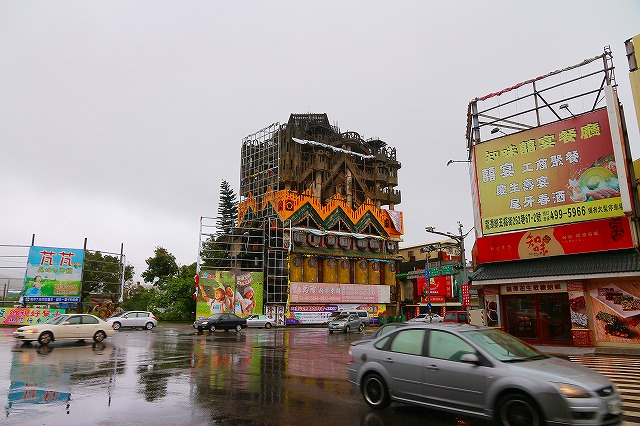
どーですか？
暗くて判りにくいかもしれないが、只者ではない異様なオーラをぶりぶり放出中。
まるでタペストリーのように複雑な要素が組み合わさってひとつの建物になっている。
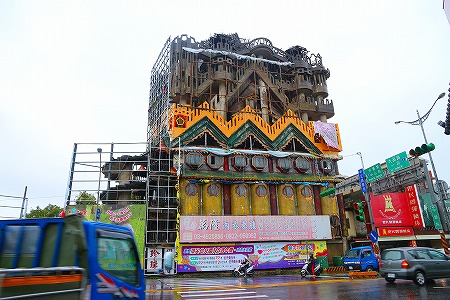
特に圧巻なのが上層部。
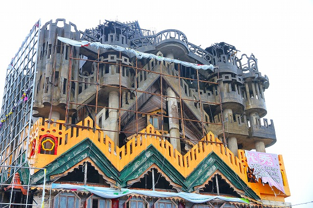
階段やスロープやテラスが立体パズルのごとく複雑に入り組んでいて、ひとくちに何階建てとか言いにくい構造になっている。
というか大きさがてんでバラバラの小部屋の集合体というか何と言うか…。
しかもテラスや壁が独特すぎる装飾に覆われていて複雑さに余計拍車がかかりまくり。
ああ、なんだか最上部の中央の手摺部分には文字が書かれているようだが、雨が凄くてよく判りません…。
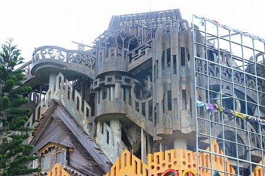
ご覧の通り、上の方はコンクリートの躯体だけが作られており、完成には至っていない。
そもそもこの建物は何なのか、何か目的を持った建物なのか、それすら不明だ。
オフィスビル、ギャラリー、住居、商店、バー…いやいやいやいや。恐らくそんな目的すらないはずだ。いや、あってほしくない。
なぜならこの葉山楼は作者の脳内を具現化するためだけに存在している「純粋建築」なのだから（注；いつもながら小嶋がひとりよがりの妄想モードに突入しています)。
この建物はどこをどう見ても建築的な愉楽に取り付かれた作品である。
そこには使い勝手や快適性やランニングコストや固定資産価値といった建築に常にまとわり付く超うざい属性のようなものはきれいさっぱり抜け落ちている。
唯一建築的に成立させなければならない要素としては「構造物として崩れない」という限りなくシンプルな一点に集約されているように思えてならない。
逆に言えば崩れなければ何をやってもイイ。
そんな建築の原点中の原点を再確認させてくれる建物といよう。
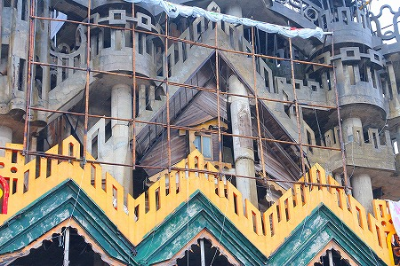
その佇まい、その未完成っぷりからついつい「現代のガウディ」とか言ってしまいそうになるが、そう軽々しく呼んでしまうにはあまりにも異形で異様でマッドだ。
ガウディの建築も異形ではあるが、この建物に比べたら全然合理的だし理知的だし。
むしろこの建物は非合理性そのものを形象化しようとしているように思えてならないのだ。
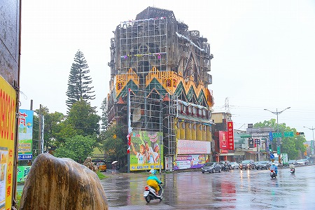
南側。
交差点に面した部分にわたされた鉄骨のフレームは看板の布を張るためのものだ。
以前は道路に面した部分には全て広告が張り巡らせてあったようだが、現在は下層部にしか広告はない。
従って以前より全景が見易くなっているはずである。
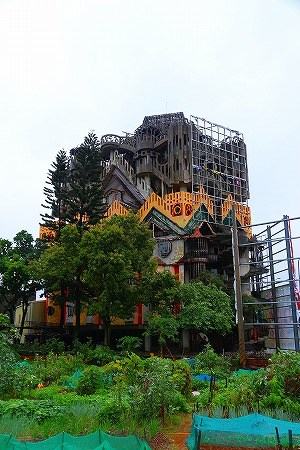
西側。
表通りから見て裏側に当たる部分だが手抜きは一切ない。
これはつまり「誰かに見せよう」という類の建築ではないことを意味する。
この建物を作った（作ってる？）作者の強烈なメッセージ性が表れているといえよう。
と、ここでこの建物の作者である葉先生に出会う。
身振り手振りで建物の中を見せておくれ、的な交渉をするもあまりにも天候が荒れているのでお止めなさい、と相成った。
うむー、残念。でも確かにこの風と雨でろくに手摺もない足元がかなり不確かな建設中の現場に登っていったらどうなったかわからないからココは長老の言に従うまで、か。
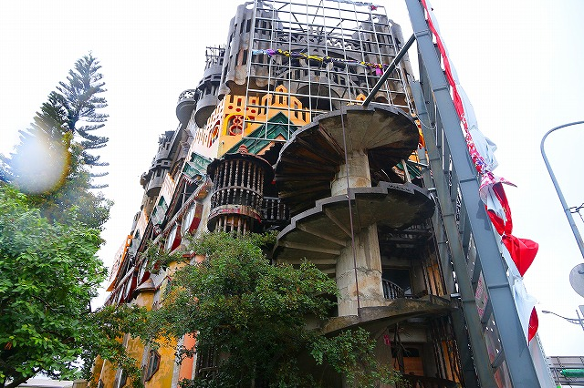
ホラ、螺旋階段とか手摺なしだもの！
仕方がないので外から眺めさせてもらう。
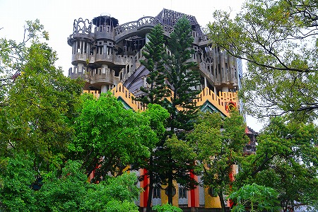
螺旋階段の下のほうには木製の手摺が付いている。
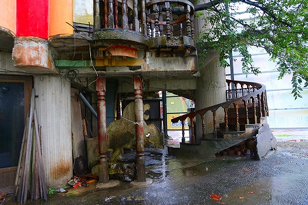
コンクリの無骨な躯体とホームセンターで売っているような木製の手摺のアンバランスさが印象的だった。
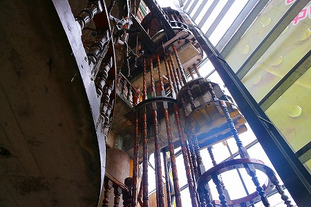
下層部だけは外壁が塗られている。外側だけは一応完成しているようだ。
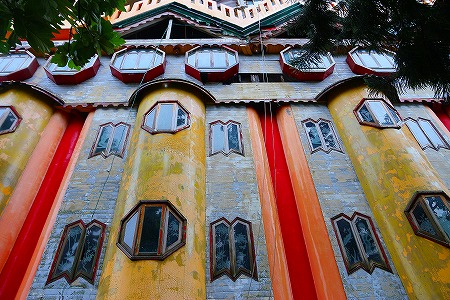
半円柱状に八角形の窓。巨大な棺桶、あるいはロボットの格納庫が林立しているかのような迫力だ。
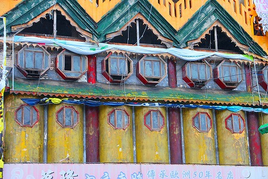
下層部ペイントされている部分がどこかモダン中華風なのに対して三角形が連続する中層部はタイのランナー様式を髣髴とさせる。
完成した暁にはさぞ奇天烈な建物になるのだろうが、実は未完成のこの時点が一番ミステリアスなのかもしれない、とも思った。
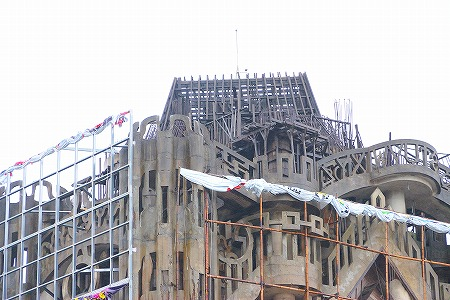
時折木で覆われている部分もあったりして混成具合に余計拍車が掛かりまくり。
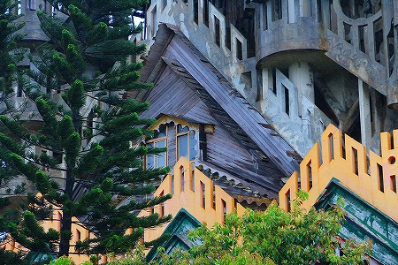
というわけでどんどん風と雨が強まってきた。
ああ、もう撤収だなー。
また来るよー。